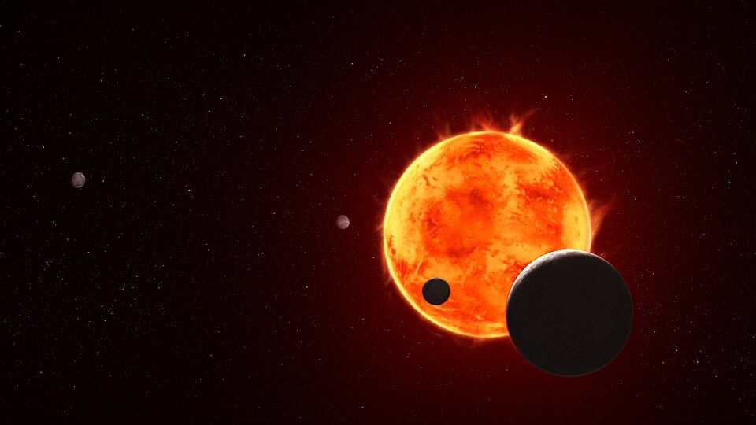

Universe · 7 articles
Stars
How stars are born, shine and die: nebulae, red giants, supernovae, neutron stars, black holes and planets around other suns.
Every star in the sky is a sun, many of them larger and brighter than ours. They are born in clouds of gas, spend millions or trillions of years fusing atoms and, when they die, seed space with the elements that make up planets and living things. We are, quite literally, stardust.
 The life of starsFrom birth in a nebula to death as a white dwarf, neutron star or black hole: it all depends on mass.
The life of starsFrom birth in a nebula to death as a white dwarf, neutron star or black hole: it all depends on mass. Types of stars and their coloursBlue, white, yellow, orange and red: a star's colour reveals its temperature, and its brightness, its size and age.
Types of stars and their coloursBlue, white, yellow, orange and red: a star's colour reveals its temperature, and its brightness, its size and age. NebulaeClouds of gas and dust where stars are born and where their remains end up: the most beautiful landscapes in the sky.
NebulaeClouds of gas and dust where stars are born and where their remains end up: the most beautiful landscapes in the sky. SupernovaeThe most violent explosions since the Big Bang: a star that outshines its whole galaxy and forges the universe's gold and iron.
SupernovaeThe most violent explosions since the Big Bang: a star that outshines its whole galaxy and forges the universe's gold and iron. Black holesRegions where gravity is so strong that not even light escapes: how they form, what would happen if you fell in and how they were photographed.
Black holesRegions where gravity is so strong that not even light escapes: how they form, what would happen if you fell in and how they were photographed. Neutron stars and pulsarsA city-sized ball 20 km across with more mass than the Sun, spinning hundreds of times a second: the densest objects after black holes.
Neutron stars and pulsarsA city-sized ball 20 km across with more mass than the Sun, spinning hundreds of times a second: the densest objects after black holes.
Exoplanets and life in the universeMore than 6,000 planets around other stars, worlds that could have water and the big question: are we alone?